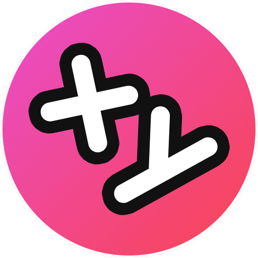
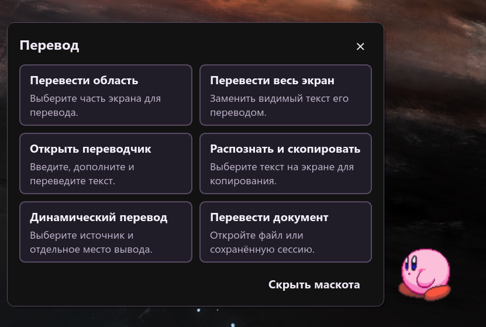

Распознавание на устройстве
Windows OCR, Apple Vision, Tesseract и дополнительные движки распознают текст на вашем компьютере.

Xynapse.МАЛЕНЬКОЕ ПРИЛОЖЕНИЕ. МИР БЕЗ ЯЗЫКОВЫХ БАРЬЕРОВ.
Игра, видео или упрямый PDF. Выделите текст на экране — перевод появится прямо там, где он нужен.
Без регистрации. Без рекламы. Открытый код.


Посмотрите короткую запись работы приложения.
УВИДЕЛИ. ВЫДЕЛИЛИ. ПОНЯЛИ.
Без пересылки скриншотов между приложениями. Выберите действие и продолжайте своё дело.
Выделите область и переведите текст на экране, даже если его нельзя скопировать обычным способом.
Ctrl + Alt + TПосмотрите короткую запись работы приложения.
Заберите текст с картинки, скана или из приложения. Распознавание сразу отправит его в буфер обмена.
Ctrl + Alt + CПосмотрите короткую запись работы приложения.
Перевод появится поверх видимого текста. Чтобы закрыть наложение, нажмите правую кнопку мыши.
Ctrl + Alt + FПосмотрите короткую запись работы приложения.
Выделите текст в приложении и переведите его. А ещё можно сразу заменить выделенное переводом.
Ctrl + Alt + QПосмотрите короткую запись работы приложения.
ТЕКСТ МЕНЯЕТСЯ. ПЕРЕВОД УСПЕВАЕТ.
Отметьте нужные области. Динамический перевод следит за изменениями текста и показывает результат поверх оригинала или в отдельной области.
Ctrl + Alt + GФиолетовая рамка — оригинал. Зелёная — область перевода.



ВАШ КОМПАНЬОН НА РАБОЧЕМ СТОЛЕ
Не любите горячие клавиши? Нажмите на маскота, чтобы перевести, скопировать текст или открыть документ. Основные действия всегда под рукой.
Светлая или тёмная тема. Маскота можно скрыть.
ВАШ ТЕКСТ. ВАШ ВЫБОР.
Windows OCR, Apple Vision, Tesseract и дополнительные движки распознают текст на вашем компьютере.
Используйте онлайн-сервис или скачайте модели Argos Translate / Hy-MT для перевода без интернета.
Онлайн-сервис получает переводимый текст. С офлайн-движком распознавание и перевод остаются на устройстве.
МОЖНО НАЧИНАТЬ
Выберите свою систему. Приложение бесплатное, Python уже внутри.
Текущая версия v1.8.1Windows 10 / 11 · x64
macOS 13.4 и новее
Инструкция по установкеLinux · x86_64
Перед запуском разрешите выполнение файла AppImage.
Сборки Windows и Mac пока подписаны собственным сертификатом jabrailkhalil. При первом запуске система может показать предупреждение; Mac-сборка пока не прошла проверку Apple (notarization).
Все файлы релиза и контрольные суммыFAQ
Да. Сначала скачайте языки распознавания и модель Argos Translate или Hy-MT. Онлайн-переводчикам по-прежнему нужен интернет.
На Windows — кнопкой обновления в приложении. На Mac и Linux скачайте новый DMG или AppImage и замените приложение, сохранив свои пользовательские данные.
Приложение читает видимый текст в играх и видео. Точность зависит от шрифта и качества изображения. Иногда нужен оконный режим или режим без рамки; ограничения захвата могут мешать работе.
Да, в настройках. На Mac вместо Ctrl используется Command, вместо Alt — Option. На Linux сочетания задаются в настройках рабочего стола. Маскот тоже позволяет запускать действия.
Можно открыть TXT, Markdown, DOCX, PDF, HTML и RTF. На Mac приложение подскажет, где включить запись экрана и универсальный доступ. Рядом со скачиванием есть инструкции.
Уже больше 3 000 скачиваний. Если приложение помогает вам, будем рады звезде на GitHub и встрече в Telegram.